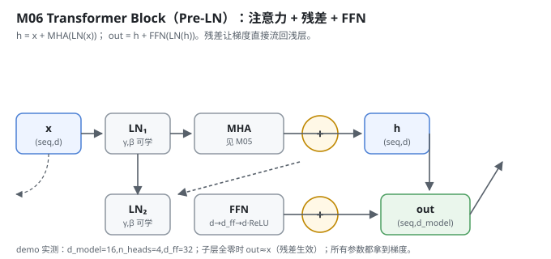
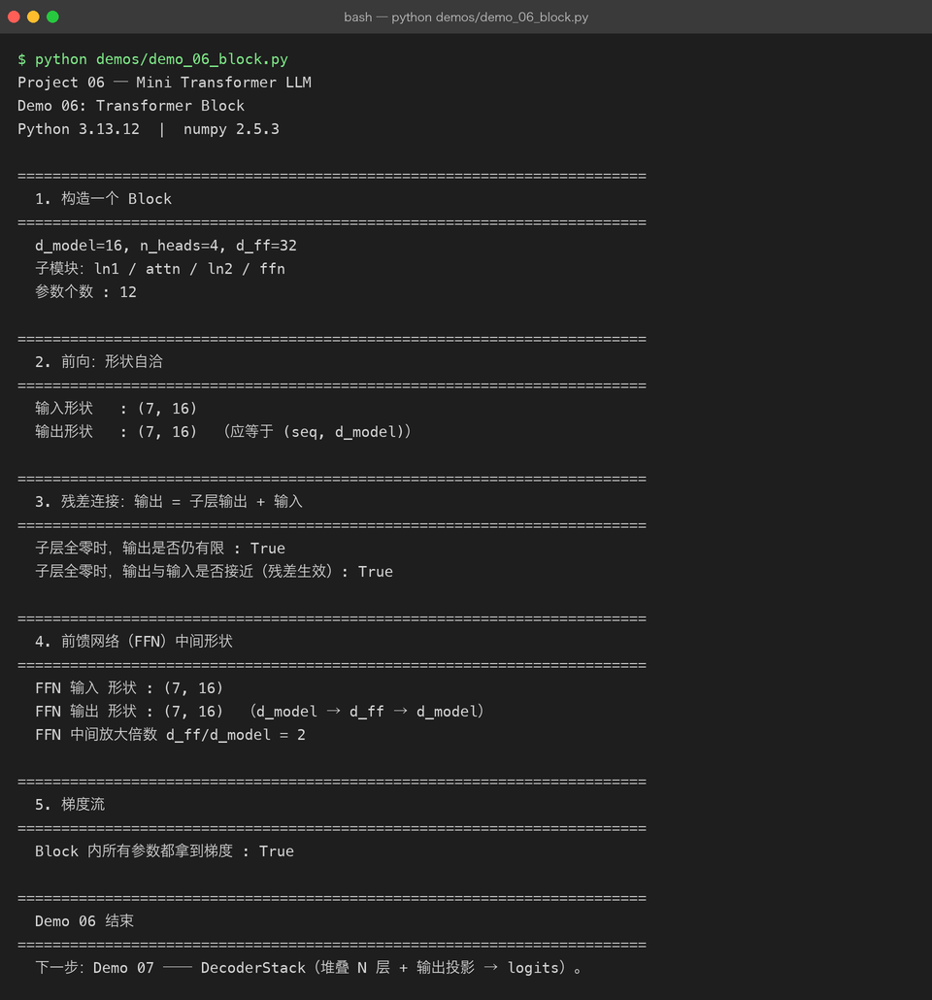

Milestone 06 — Transformer Block：注意力 + 残差 + FFN
Milestone 04–05 写通了多头注意力。但光有注意力不够：注意力是「token 之间交换信息」，还需要一个位置无关的前馈网络让每个 token 自己过一遍非线性变换；而且两层都要用残差接起来，否则堆深了梯度就断。
这一层把前面的零件拼成「一个完整的计算单元」。Project 05 里我只知道有个 block；这里我亲自把 Pre-LN 结构写出来 —— 注意力子层、FFN 子层各配一个 LayerNorm + 一条残差捷径。
1. What / Why：残差为什么是必选项
没有残差，深层网络的反向梯度要连乘很多层 Jacobian，几乎必然消失，训不动。残差 out = sublayer(x) + x 给梯度留了一条「直通高速公路」：即使子层当时什么都没学到（全零），out 仍等于 x，信息不丢、梯度不灭。
为什么用 Pre-LN（先 LayerNorm 再进子层）而不是 Post-LN：Pre-LN 训练更稳，深层也不容易数值炸，玩具规模下尤其友好。
2. Design：Pre-LN + 双残差
src/model/block.py 三个类：
FeedForward：Linear(d_model → d_ff) → ReLU → Linear(d_ff → d_model)。本项目用 ReLU（论文常用 GELU，玩具规模下 ReLU 更直观、手写更简单）。d_ff是中间放大倍数。_LayerNorm：包住 autograd 的layernorm，gamma/beta是可学参数。TransformerBlock：前向就是两行 ——
h = x + MHA(LayerNorm(x)) # 子层 1：注意力 + 残差
out = h + FFN(LayerNorm(h)) # 子层 2：前馈 + 残差
3. Real-run evidence（来自 demos/out/demo_06_block.txt）
真实环境：Python 3.13.12 | numpy 2.5.3。
d_model=16, n_heads=4, d_ff=32
子模块：ln1 / attn / ln2 / ffn
参数个数 : 12
输入形状 : (7, 16)
输出形状 : (7, 16) （应等于 (seq, d_model)）残差真的工作 —— 把子层强行置零，输出仍等于输入（信息靠残差捷径保住）：
子层全零时，输出是否仍有限 : True
子层全零时，输出与输入是否接近（残差生效）: TrueFFN 中间放大倍数：
FFN 输入 形状 : (7, 16)
FFN 输出 形状 : (7, 16) （d_model → d_ff → d_model）
FFN 中间放大倍数 d_ff/d_model = 2整块所有参数都拿到了梯度（说明残差 + LayerNorm + 注意力的反向链路全通）：
Block 内所有参数都拿到梯度 : True
4. Bugs / lessons
本 milestone demo 没有暴露真实运行 bug。一个设计提醒：残差不是「加了就完」，它要求子层输出和输入形状完全一致才能相加（(seq, d_model) 对 (seq, d_model)）。源码里 MHA 和 FFN 都保持 d_model 维不变，残差 add 才成立。若哪天把 FFN 的输出维写错，这条加法不会报错但语义全毁 —— 所以 demo 专门验了「子层全零时 out≈x」这条。
5. Conclusion
- 一个 Block = 注意力子层 + FFN 子层，各配 LayerNorm 与一条残差。
- 残差给梯度留了直通路径：子层全零时
out == x，深层才训得动。 - Pre-LN 比 Post-LN 训练更稳，是本项目选它的原因。
- 残差成立的前提是「子层输出维 = 输入维」，这条在形状上必须钉死。
d_ff/d_model = 2是本玩具配置的中间放大倍数（真实模型常取 4）。
6. Code map
| 文件 | 职责 |
|---|---|
src/model/block.py | FeedForward（ReLU 两层线性）、_LayerNorm（gamma/beta 可学）、TransformerBlock（Pre-LN 双残差） |
src/model/multihead.py | 复用的 MultiHeadAttention |
src/model/autograd.py | 复用的 layernorm / linear / relu / add（均带反向） |
demos/demo_06_block.py | 5 节演示：构造 / 前向 / 残差 / FFN / 梯度，输出落 demos/out/demo_06_block.txt |
assets/block.svg | 本章结构图 |
7. Version line
v0.4 → v0.5，Transformer Block（Pre-LN + 双残差 + FFN）落地，残差与梯度链路验证通过，演示真实跑通并核对形状/残差/梯度，配图 1 张手写 SVG + 1 张真实终端截图。